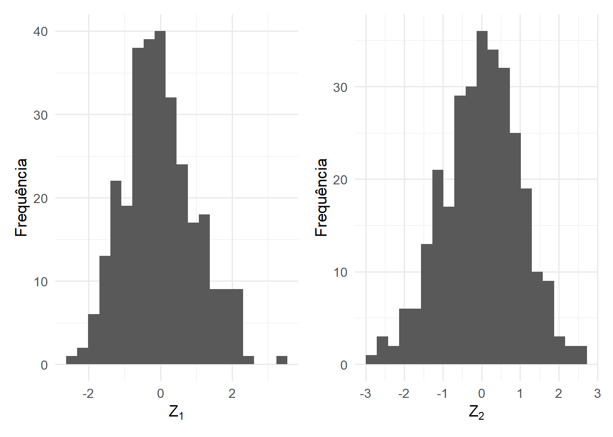
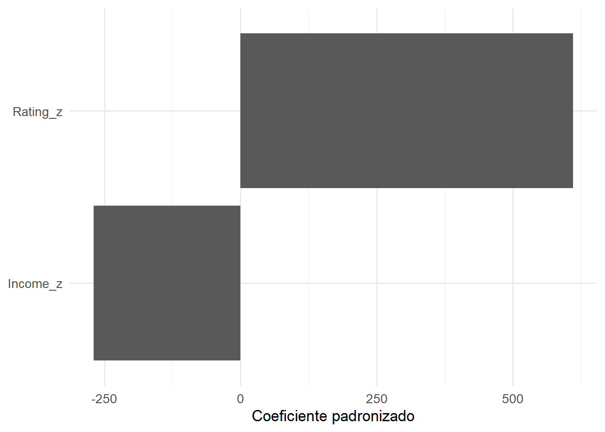
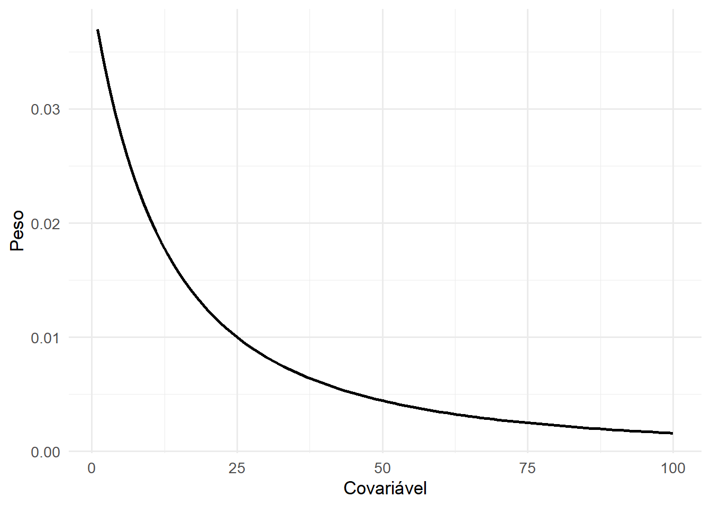
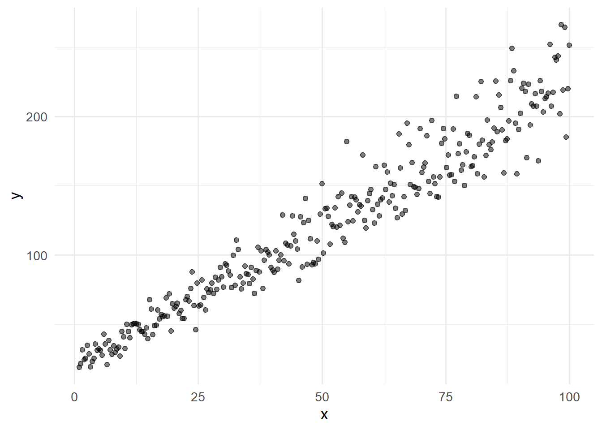
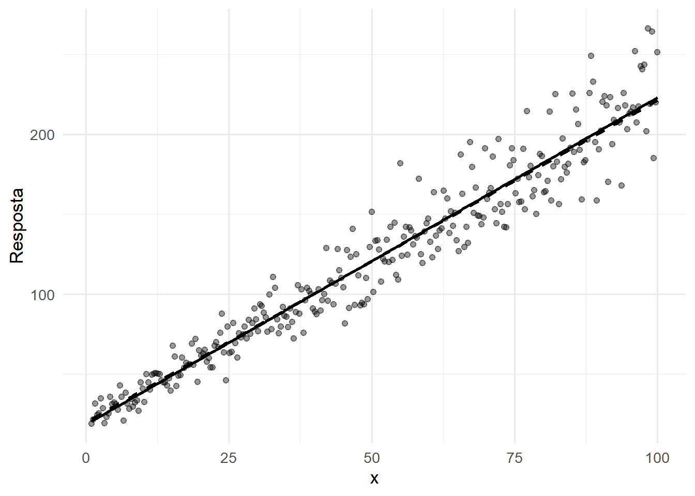
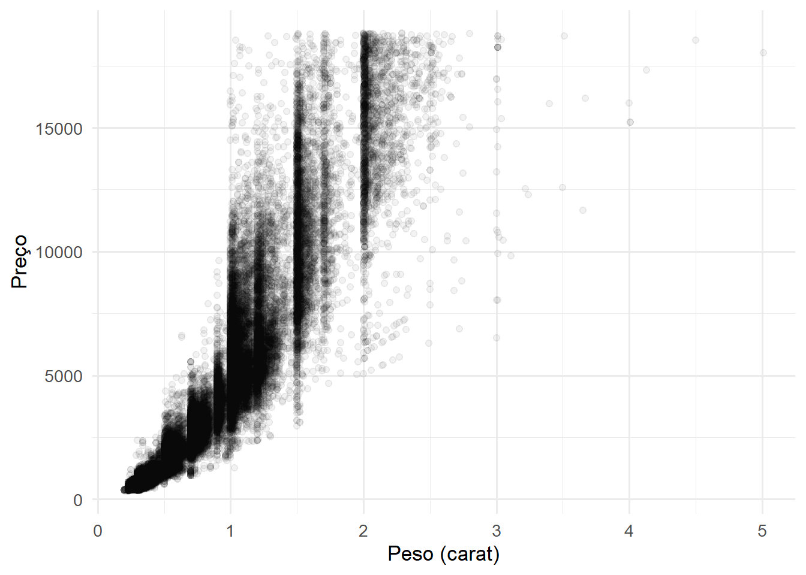
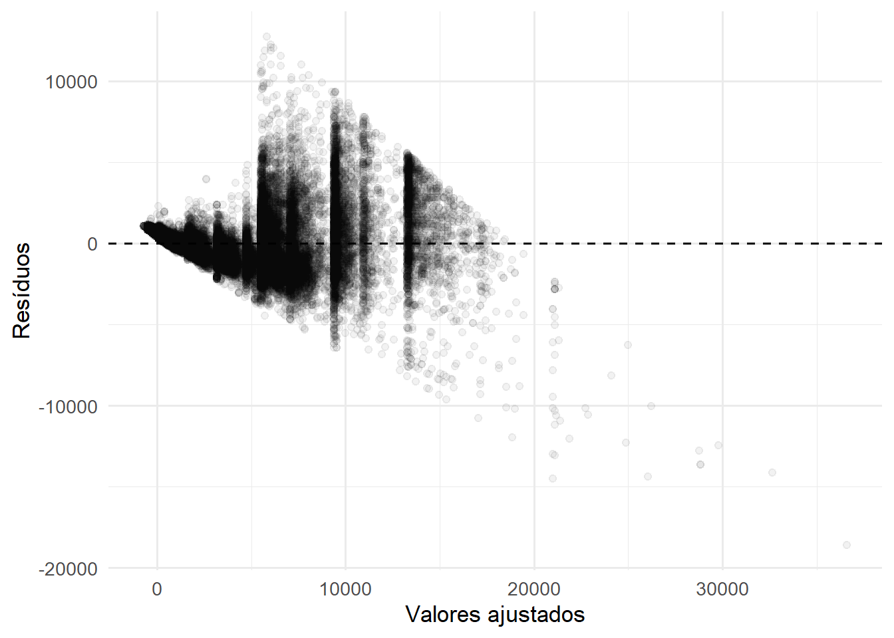
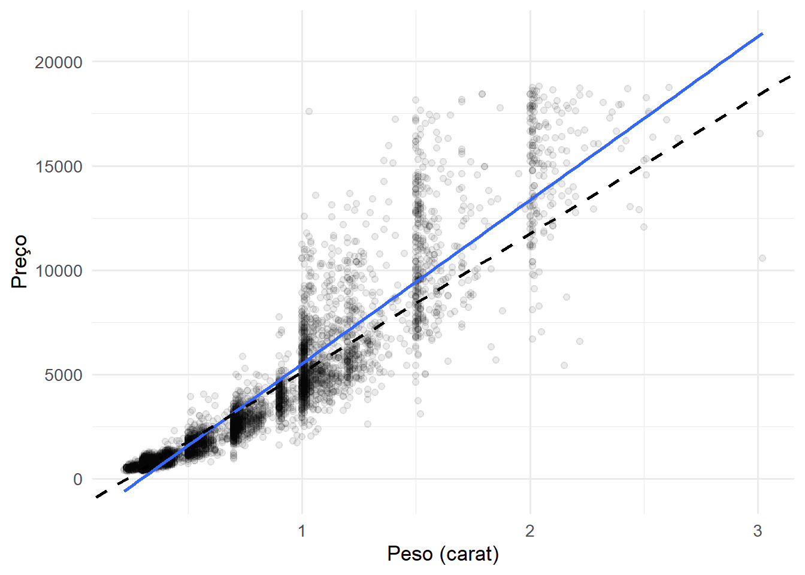

20 Transformações Lineares em Modelos de Regressão
20.1 Introdução e motivação
No capítulo anterior discutimos como a análise diagnóstica permite avaliar a adequação das hipóteses do Modelo de Regressão Linear Múltipla. Em muitas situações, os diagnósticos revelam dificuldades relacionadas à interpretação dos coeficientes, à presença de heterocedasticidade ou à comparação entre variáveis medidas em escalas muito distintas.
Nesses casos, uma alternativa consiste em realizar transformações lineares sobre as variáveis ou modificar o processo de estimação utilizado no ajuste do modelo. Essas estratégias não alteram o objetivo fundamental da regressão, mas podem facilitar a interpretação dos resultados, melhorar propriedades estatísticas dos estimadores e tornar o modelo mais adequado aos dados observados (Kutner et al., 2005; Montgomery; Peck; Vining, 2021).
Duas abordagens particularmente importantes são a padronização de variáveis e a regressão linear ponderada.
A padronização busca colocar variáveis em escalas comparáveis, permitindo analisar a importância relativa das covariáveis e facilitando procedimentos computacionais. Já a regressão linear ponderada procura lidar com situações em que diferentes observações apresentam níveis distintos de variabilidade, cenário frequentemente associado à heterocedasticidade (Fox; Weisberg, 2019; Seber; Lee, 2003).
Embora essas técnicas sejam frequentemente apresentadas de forma independente, ambas podem ser interpretadas como transformações lineares aplicadas ao problema de regressão.
20.2 Por que transformar variáveis?
Considere um modelo utilizado para explicar o preço de imóveis a partir da área construída e da idade da construção.
Suponha que a área seja medida em metros quadrados e a idade em anos. Mesmo quando ambas as variáveis exercem influência relevante sobre o preço, seus coeficientes podem possuir magnitudes completamente distintas simplesmente porque as escalas de medição são diferentes.
De forma semelhante, em estudos econômicos, variáveis como renda anual, idade e anos de escolaridade costumam ser registradas em unidades muito diferentes. Comparar diretamente os coeficientes estimados pode levar a interpretações equivocadas sobre a importância relativa de cada covariável.
Além disso, a análise diagnóstica pode revelar situações em que a variabilidade dos erros não permanece constante ao longo das observações. Nesses casos, algumas observações contêm mais informação do que outras, tornando desejável atribuir pesos diferenciados durante o processo de estimação.
Assim, transformações lineares podem ser utilizadas para diferentes propósitos, entre os quais destacam-se:
- facilitar a interpretação e comparação entre coeficientes;
- melhorar a estabilidade numérica dos cálculos;
- reduzir problemas associados a escalas muito distintas;
- incorporar estruturas de variabilidade não constantes;
- aumentar a eficiência dos estimadores.
Em modelos que envolvem termos polinomiais, interações ou covariáveis medidas em escalas muito distintas, a padronização também pode reduzir problemas numéricos associados à inversão da matriz \(\mathbf X^\top \mathbf X\). Por essa razão, a transformação é frequentemente utilizada em procedimentos de seleção de variáveis, regressão penalizada e algoritmos de aprendizado de máquina (Fox; Weisberg, 2019).
Nos tópicos seguintes estudaremos duas das transformações mais utilizadas em regressão: a padronização de variáveis e a regressão linear ponderada.
20.3 Padronização de covariáveis
20.3.1 Conceito
Em muitas aplicações, as covariáveis de um modelo são medidas em unidades completamente distintas. Por exemplo, idade pode ser registrada em anos, renda em reais e área construída em metros quadrados.
Nessas situações, a magnitude dos coeficientes estimados depende não apenas da força da associação entre cada covariável e a resposta, mas também da escala utilizada para medir cada variável.
Considere o modelo
\[ Y_i = \beta_0 + \beta_1 X_{1i} + \beta_2 X_{2i} + \varepsilon_i. \]
Mesmo que \(X_1\) e \(X_2\) exerçam influências semelhantes sobre a resposta, os coeficientes \(\beta_1\) e \(\beta_2\) podem apresentar magnitudes muito diferentes simplesmente porque as unidades de medida são distintas.
Por essa razão, comparar diretamente coeficientes estimados nem sempre é apropriado.
Uma solução consiste em substituir as variáveis originais por versões padronizadas.
Para uma variável genérica \(X\), define-se a transformação
\[ Z = \frac{X-\bar X}{s_X}, \]
em que:
- \(\bar X\) representa a média amostral;
- \(s_X\) representa o desvio padrão amostral.
Após essa transformação, a nova variável apresenta:
\[ \bar Z = 0 \]
e
\[ s_Z = 1. \]
Dessa forma, todas as covariáveis passam a ser expressas na mesma escala.
20.3.2 Visualizando a padronização
A Figura a seguir ilustra duas variáveis originalmente medidas em escalas bastante distintas.
Após a padronização, ambas passam a possuir média zero e desvio padrão igual a um.

Observa-se que a transformação não altera o formato da distribuição. Apenas modifica sua localização e escala.
20.3.3 Padronização apenas das covariáveis
A forma mais comum de padronização consiste em transformar apenas as variáveis explicativas.
Se definirmos
\[ Z_j = \frac{X_j-\bar X_j}{s_j}, \]
o modelo passa a ser escrito como
\[ Y_i = \beta_0^* + \beta_1^* Z_{1i} + \cdots + \beta_p^* Z_{pi} + \varepsilon_i. \]
Nesse caso, cada coeficiente \(\beta_j^*\) representa a variação média esperada em \(Y\) associada ao aumento de um desvio padrão na covariável correspondente, mantendo as demais variáveis constantes.
Essa interpretação já permite comparar diretamente a importância relativa das covariáveis.
Por exemplo, se
\[ \beta_1^* = 2.5 \]
e
\[ \beta_2^* = 0.8, \]
então um aumento de um desvio padrão em \(X_1\) está associado a uma alteração média maior em \(Y\) do que um aumento de um desvio padrão em \(X_2\).
20.3.4 Padronização da resposta e das covariáveis
Em algumas situações, também se padroniza a variável resposta.
Definindo
\[ Z_Y = \frac{Y-\bar Y}{s_Y}, \]
e
\[ Z_j = \frac{X_j-\bar X_j}{s_j}, \]
obtemos o modelo
\[ Z_Y = \beta_1^* Z_1 + \beta_2^* Z_2 + \cdots + \beta_p^* Z_p + \varepsilon. \]
Nessa parametrização, os coeficientes tornam-se adimensionais.
Cada coeficiente passa a representar a variação esperada, em desvios padrão da resposta, associada ao aumento de um desvio padrão da covariável correspondente.
Esse tipo de padronização é frequentemente utilizado quando o objetivo principal consiste em comparar a importância relativa das covariáveis.
Quando todas as variáveis são padronizadas, os coeficientes estimados passam a ser conhecidos como coeficientes padronizados (standardized coefficients ou beta coefficients). Esses coeficientes são amplamente utilizados em áreas como Psicologia, Educação, Ciências Sociais e estudos observacionais, onde frequentemente se deseja comparar a contribuição relativa de diferentes covariáveis medidas em unidades distintas (Kutner et al., 2005).
20.3.5 Interpretação dos coeficientes padronizados
Uma vantagem importante dos coeficientes padronizados é a comparabilidade.
Considere o modelo
\[ Preço = \beta_0 + \beta_1 Área + \beta_2 Idade + \varepsilon. \]
Suponha que o ajuste produza
\[ \hat\beta_1 = 1200 \]
e
\[ \hat\beta_2 = -500. \]
Não é possível concluir imediatamente que a área seja mais importante do que a idade, pois as variáveis estão medidas em unidades distintas.
Após a padronização, poderíamos obter
\[ \hat\beta_1^* = 0.72 \]
e
\[ \hat\beta_2^* = -0.18. \]
Nesse caso, a interpretação torna-se mais direta: a área apresenta associação mais forte com o preço do imóvel do que a idade da construção.
Essa comparação constitui uma das principais motivações para o uso da padronização em estudos exploratórios, modelos preditivos e métodos de aprendizado de máquina, nos quais frequentemente interessa avaliar a contribuição relativa das covariáveis para a explicação da resposta (Fox; Weisberg, 2019; Kutner et al., 2005).
20.3.6 Quando não padronizar
Apesar de suas vantagens, a padronização nem sempre é desejável.
Quando os coeficientes possuem interpretação prática importante nas unidades originais, a transformação pode dificultar a comunicação dos resultados.
Por exemplo, em um estudo clínico pode ser mais informativo afirmar que um medicamento reduz a pressão arterial em 8 mmHg do que dizer que reduz a resposta em 0,35 desvios padrão.
Além disso, variáveis dummy normalmente não são padronizadas, pois já possuem interpretação direta associada às categorias representadas.
Em muitos estudos, a estratégia mais útil consiste em:
- ajustar o modelo original para interpretação substantiva;
- ajustar um modelo padronizado para comparação relativa entre covariáveis.
Dessa forma, obtêm-se simultaneamente interpretabilidade e comparabilidade.
20.3.7 Exemplo aplicado: coeficientes originais versus coeficientes padronizados
A interpretação dos coeficientes padronizados torna-se mais clara quando comparada diretamente aos coeficientes obtidos no modelo original.
Para ilustrar essa diferença, utilizaremos novamente a base Credit, disponível no pacote ISLR.
Nosso objetivo será explicar o saldo médio de crédito (Balance) a partir da renda anual (Income) e da avaliação de crédito (Rating).
Inicialmente ajustamos o modelo utilizando as variáveis em suas unidades originais.
\[ Balance_i = \beta_0 + \beta_1 Income_i + \beta_2 Rating_i + \varepsilon_i. \]
| term | estimate | std.error | statistic | p.value |
|---|---|---|---|---|
| (Intercept) | -534.8122 | 21.6027 | -24.7567 | 0 |
| Income | -7.6721 | 0.3785 | -20.2718 | 0 |
| Rating | 3.9493 | 0.0862 | 45.8103 | 0 |
Observe que os coeficientes estão expressos nas unidades originais das variáveis.
Consequentemente, suas magnitudes dependem diretamente das escalas utilizadas para medir renda e avaliação de crédito.
A seguir, padronizamos as covariáveis.
| term | estimate | std.error | statistic | p.value |
|---|---|---|---|---|
| (Intercept) | 520.0150 | 8.1441 | 63.8520 | 0 |
| Income_z | -270.3984 | 13.3386 | -20.2718 | 0 |
| Rating_z | 611.0466 | 13.3386 | 45.8103 | 0 |
Observe que os coeficientes estimados no modelo padronizado não possuem as mesmas unidades dos coeficientes originais. A comparação entre suas magnitudes passa a refletir diferenças relativas de associação com a resposta e não diferenças associadas às escalas de medição.
Agora os coeficientes associados às covariáveis passam a representar o efeito de um aumento de um desvio padrão na variável correspondente.
Como ambas estão na mesma escala, torna-se possível comparar diretamente suas magnitudes.
Uma forma ainda mais clara de visualizar essa comparação consiste em representar graficamente os coeficientes padronizados.

Nesse gráfico, coeficientes com maior magnitude indicam variáveis que apresentam associação mais forte com a resposta, considerando uma mesma unidade de comparação: um desvio padrão.
É importante destacar que a padronização não altera o ajuste do modelo nem modifica as relações existentes entre as variáveis. O que muda é a escala utilizada para expressar os coeficientes.
Por essa razão, coeficientes padronizados devem ser interpretados como uma ferramenta complementar à análise tradicional e não como substitutos dos coeficientes originais.
Em muitos estudos, ambos os modelos são apresentados: o modelo original para interpretação prática e o modelo padronizado para comparação relativa entre covariáveis.
20.4 Regressão Linear Ponderada
A padronização modifica a escala das variáveis, mas não altera o método de estimação utilizado no ajuste do modelo. Em contrapartida, quando o objetivo é lidar com estruturas de variabilidade não constantes, torna-se necessário modificar o próprio critério de estimação. Essa é a motivação da regressão linear ponderada.
20.4.1 Motivação
No capítulo anterior discutimos que uma das hipóteses clássicas do Modelo de Regressão Linear Múltipla é a homocedasticidade.
Essa hipótese estabelece que todos os erros possuem a mesma variância:
\[ Var(\varepsilon_i) = \sigma^2. \]
Quando essa condição não é satisfeita, ocorre heterocedasticidade.
Em situações heterocedásticas, algumas observações apresentam variabilidade substancialmente maior do que outras. Como consequência, nem todas carregam a mesma quantidade de informação sobre os parâmetros do modelo.
Considere, por exemplo, um estudo sobre gastos familiares em que famílias de alta renda apresentam variabilidade muito maior do que famílias de baixa renda. Embora todas as observações sejam utilizadas no ajuste por mínimos quadrados ordinários, a precisão associada a cada uma delas é diferente.
A análise diagnóstica apresentada no capítulo anterior permite identificar esse tipo de situação por meio de:
- gráficos de resíduos;
- teste de Breusch–Pagan;
- inspeção visual da dispersão residual.
Quando a heterocedasticidade é relevante, uma alternativa consiste em modificar o processo de estimação atribuindo pesos diferentes às observações.
Essa ideia conduz à regressão linear ponderada (Weighted Least Squares — WLS).
20.4.2 A ideia da ponderação
No método dos mínimos quadrados ordinários, os coeficientes são obtidos minimizando
\[ SQRes = \sum_{i=1}^{n} e_i^2. \]
Observe que todas as observações recebem exatamente o mesmo tratamento.
Na regressão ponderada, cada observação recebe um peso específico \(w_i\).
A soma de quadrados ponderada passa a ser
\[ SQRes(W) = \sum_{i=1}^{n} w_i e_i^2. \]
Observações consideradas mais precisas recebem pesos maiores.
Observações associadas a maior variabilidade recebem pesos menores.
Assim, o procedimento passa a atribuir maior importância às observações mais informativas.
Essa modificação pode produzir estimativas mais eficientes quando a estrutura de variâncias é conhecida ou adequadamente aproximada (Montgomery; Peck; Vining, 2021; Seber; Lee, 2003).
20.4.3 Formulação matricial da regressão ponderada
A regressão linear ponderada mantém a mesma estrutura geral do Modelo de Regressão Linear Múltipla. A principal diferença está na forma como as observações contribuem para o processo de estimação.
Definindo a matriz diagonal de pesos
\[ \mathbf W = \begin{bmatrix} w_1 & 0 & \cdots & 0\\ 0 & w_2 & \cdots & 0\\ \vdots & \vdots & \ddots & \vdots\\ 0 & 0 & \cdots & w_n \end{bmatrix}, \]
a soma de quadrados ponderada pode ser escrita como
\[ SQRes(W) = (\mathbf Y-\mathbf X\boldsymbol\beta)^\top \mathbf W (\mathbf Y-\mathbf X\boldsymbol\beta). \]
Assim como no MQO, o estimador é obtido derivando a função objetivo em relação aos parâmetros e igualando o resultado a zero.
O estimador de mínimos quadrados ponderados é dado por
\[ \hat{\boldsymbol\beta}_{WLS} = (\mathbf X^\top \mathbf W \mathbf X)^{-1} \mathbf X^\top \mathbf W \mathbf Y. \]
Observe que a única diferença em relação ao estimador de MQO é a presença da matriz de pesos \(\mathbf W\).
Quando todos os pesos são iguais, isto é,
\[ w_1=w_2=\cdots=w_n, \]
o estimador ponderado reduz-se exatamente ao estimador de mínimos quadrados ordinários.
Portanto, o MQO pode ser visto como um caso particular da regressão ponderada.
20.4.4 Escolha dos pesos
A escolha dos pesos constitui o aspecto central da regressão ponderada.
Em muitos problemas, assume-se que
\[ Var(\varepsilon_i) = \sigma_i^2. \]
Nesse caso, a escolha natural consiste em utilizar
\[ w_i = \frac{1}{\sigma_i^2}. \]
Assim, observações associadas a maior variância recebem menor peso no ajuste.
Essa escolha possui uma interpretação intuitiva: observações mais precisas recebem maior influência sobre a estimação dos parâmetros.
Por exemplo, suponha duas observações com variâncias
\[ \sigma_1^2 = 1 \]
e
\[ \sigma_2^2 = 9. \]
Os pesos correspondentes seriam
\[ w_1 = 1 \]
e
\[ w_2 = \frac{1}{9}. \]
Nesse cenário, a primeira observação exerce influência nove vezes maior sobre o ajuste do modelo.

É importante destacar que os pesos não representam importância subjetiva atribuída pelo pesquisador. Em regressão ponderada, os pesos estão associados à precisão das observações e à estrutura de variâncias do modelo.
20.4.5 Propriedades dos estimadores ponderados
Sob as hipóteses usuais do modelo linear,
\[ E(\boldsymbol\varepsilon)=\mathbf 0, \]
e
\[ Var(\boldsymbol\varepsilon) = \sigma^2 \mathbf W^{-1}, \]
o estimador ponderado permanece não viesado:
\[ E( \hat{\boldsymbol\beta}_{WLS} ) = \boldsymbol\beta. \]
Além disso,
\[ Var( \hat{\boldsymbol\beta}_{WLS} ) = \sigma^2 (\mathbf X^\top \mathbf W \mathbf X)^{-1}. \]
Uma consequência importante é que, quando os pesos são corretamente especificados, o estimador ponderado possui menor variabilidade do que o estimador de mínimos quadrados ordinários.
Em outras palavras, a regressão ponderada busca recuperar a eficiência perdida pela presença da heterocedasticidade.
Por essa razão, o WLS é frequentemente apresentado como uma extensão natural do resultado de Gauss-Markov para situações em que as variâncias dos erros não são constantes (Montgomery; Peck; Vining, 2021; Seber; Lee, 2003).
20.4.6 Inferência em modelos ponderados
Os procedimentos inferenciais discutidos no capítulo de inferência continuam válidos em modelos ponderados.
Uma vez obtidas as estimativas dos parâmetros e sua matriz de covariância, podem ser construídos:
- intervalos de confiança;
- regiões de confiança;
- testes \(t\) para parâmetros individuais;
- testes \(F\) para hipóteses conjuntas.
A estrutura conceitual permanece a mesma.
O que muda é a matriz utilizada para calcular os erros padrão dos estimadores.
Assim, a transição entre MQO e WLS é menos drástica do que pode parecer inicialmente. A principal alteração ocorre no mecanismo de estimação, enquanto os procedimentos inferenciais mantêm a mesma lógica geral desenvolvida anteriormente.
20.4.7 Quando os pesos são desconhecidos
Na prática, raramente a estrutura exata das variâncias é conhecida.
Em muitos problemas, sabe-se apenas que a variabilidade cresce ou diminui em função de alguma covariável.
Por exemplo, pode ocorrer que
\[ Var(\varepsilon_i) \propto X_i, \]
ou
\[ Var(\varepsilon_i) \propto X_i^2. \]
Nessas situações, os pesos precisam ser estimados a partir dos próprios dados.
Esse procedimento é conhecido como Regressão Ponderada Factível (Feasible Weighted Least Squares — FWLS).
A ideia básica consiste em:
- ajustar inicialmente o modelo por MQO;
- analisar os resíduos obtidos;
- modelar a estrutura de variâncias;
- construir pesos estimados;
- reajustar o modelo utilizando WLS.
O FWLS é amplamente utilizado em aplicações econômicas, financeiras, ambientais e industriais, onde a heterocedasticidade frequentemente surge de forma natural (Carroll; Ruppert, 1988).
É importante destacar que a qualidade do ajuste ponderado depende diretamente da qualidade da modelagem dos pesos. Pesos mal especificados podem produzir resultados pouco diferentes daqueles obtidos por MQO.
20.4.8 Exemplo ilustrativo
Para visualizar a ideia da ponderação, considere os dados apresentados na Figura a seguir.

Observa-se que a dispersão aumenta à medida que os valores de \(x\) crescem.
Nesse cenário, as observações associadas aos maiores valores de \(x\) apresentam variabilidade substancialmente superior às observações localizadas na região inicial do gráfico.
Podemos comparar os ajustes obtidos por MQO e WLS.

Nesse exemplo, a linha contínua corresponde ao ajuste por MQO e a linha tracejada corresponde ao ajuste ponderado.
Embora as diferenças possam ser pequenas em alguns conjuntos de dados, a regressão ponderada tende a produzir estimativas mais eficientes quando a estrutura de variâncias é adequadamente representada pelos pesos utilizados.
20.4.9 Exemplo: Base diamonds
Para ilustrar a aplicação da regressão ponderada em dados reais, utilizaremos a base diamonds, disponível no pacote ggplot2. Essa base contém informações sobre mais de 50 mil diamantes comercializados, incluindo características físicas e seu preço de mercado.
Inicialmente, consideremos um modelo simples relacionando o preço do diamante (price) ao seu peso em quilates (carat):
\[ price_i = \beta_0 + \beta_1 carat_i + \varepsilon_i. \]
Embora esse modelo seja simplificado, ele permite visualizar claramente um padrão frequentemente encontrado em aplicações reais: a variabilidade da resposta aumenta à medida que o valor da covariável cresce.

Observa-se que a dispersão dos preços aumenta substancialmente para diamantes maiores. Esse comportamento sugere a presença de heterocedasticidade.
Ajustemos inicialmente o modelo por mínimos quadrados ordinários.
| term | estimate | std.error | statistic | p.value |
|---|---|---|---|---|
| (Intercept) | -2256.361 | 13.0553 | -172.8304 | 0 |
| carat | 7756.426 | 14.0666 | 551.4081 | 0 |
O gráfico de resíduos versus valores ajustados permite investigar a hipótese de homocedasticidade.

O padrão em forma de funil observado no gráfico sugere que a variância dos erros cresce com o valor ajustado.
Podemos complementar essa avaliação utilizando o teste de Breusch–Pagan.
| statistic | p.value | parameter | method |
|---|---|---|---|
| 9131.228 | 0 | 1 | studentized Breusch-Pagan test |
A evidência de heterocedasticidade sugere que diferentes observações possuem diferentes níveis de precisão.
Como ilustração, construiremos um modelo ponderado utilizando pesos inversamente proporcionais ao quadrado do peso do diamante:
\[ w_i = \frac{1}{carat_i^2}. \]
Essa escolha não pretende representar a estrutura exata das variâncias, mas apenas ilustrar o mecanismo da regressão ponderada.
| term | estimate | std.error | statistic | p.value |
|---|---|---|---|---|
| (Intercept) | -1506.114 | 6.1567 | -244.6281 | 0 |
| carat | 6639.787 | 12.3007 | 539.7880 | 0 |
A Figura a seguir compara os ajustes obtidos pelos dois métodos.

A linha contínua corresponde ao ajuste obtido por mínimos quadrados ordinários, enquanto a linha tracejada representa o ajuste ponderado.
Em aplicações reais, a principal vantagem da regressão ponderada nem sempre está na alteração visual da reta ajustada. Frequentemente, o ganho ocorre na precisão das estimativas, nos erros padrão e nos procedimentos inferenciais associados ao modelo.
Este exemplo ilustra como os resultados do diagnóstico podem orientar escolhas posteriores na modelagem. A identificação de heterocedasticidade não encerra a análise; ela pode motivar transformações, uso de erros padrão robustos ou a adoção de modelos ponderados quando houver justificativa para a especificação dos pesos.